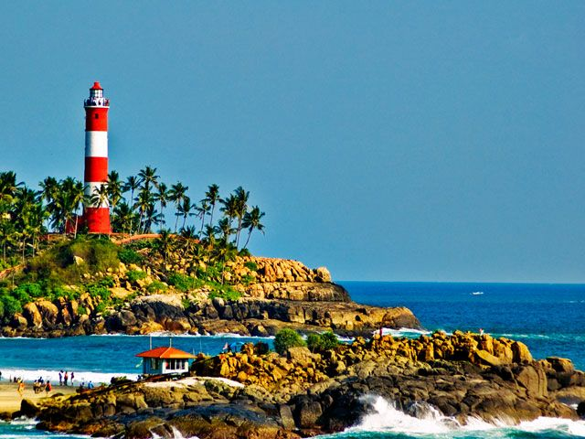
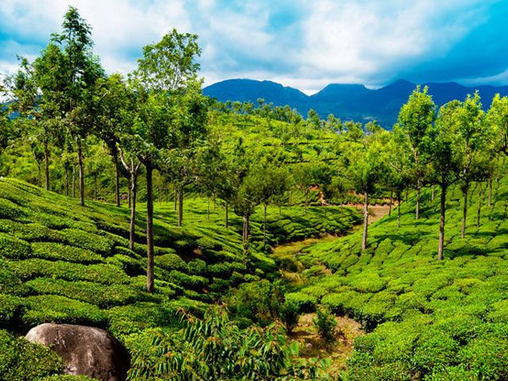
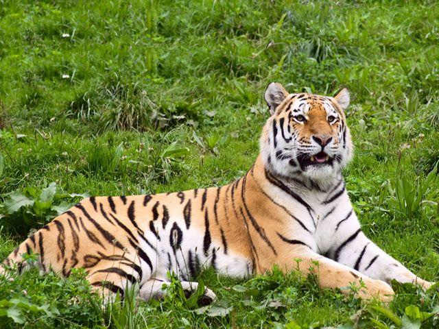
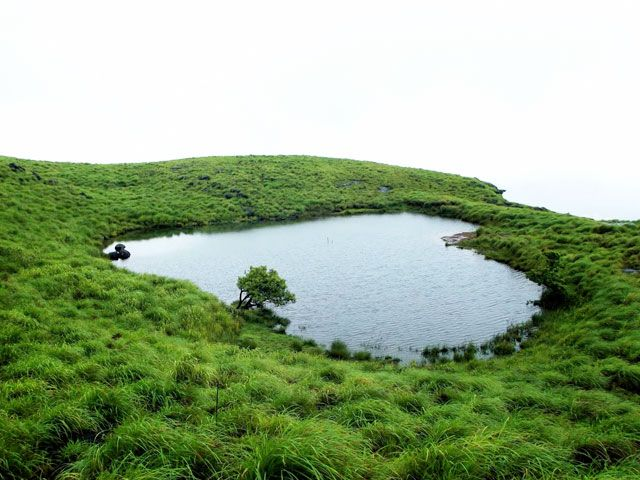

Top places to visit in Kerala
1.Allepey

Situating in the Town Alappuzha district of Kerala Alappuzha or previously and more popularly known as Alleppey is one of the most important tourist destination of God’s Own Country - Kerala. Enamoured by the enchanting scenic beauty of this backwater queen, Lord Curzon, the then viceroy of India (1st Decade of 20th Century) expressed his felicity by calling Alleppey the Venice of the East. The city is still famous with this sobriquet. There are numerous canals, beaches and especially backwaters which have made this place the most attractive tourist spot in Kerala. Alappuzha is also the headquarters of Alappuzha district.
The district of Alappuzha was formed in 1957. But the place has a long and rich historical as well as the mythological past. Kuttanad which is called the Rice Bowl of Kerala is the long land form with a huge stretch of paddy fields, rows of coconut and palm trees and numerous water bodies is the main physical characteristic of this place. Historical evidences say that Alappuzha had its trade history with Greece and Portugal. Especially the Portuguese merchants and travelers had long been coming to this place since they arrived at Calicut. Therefore, besides trading, the Portuguese started preaching Catholicism and baptizing the resident Syrian Christians. But during 17th century the Portuguese influence started falling and the Dutch took important place and position in Alappuzha. They used to trade the spices mainly ginger, pepper and cinnamon, etc from here. But eventually they started spreading their inevitable influence on the culture and political affairs in Alappuzha until the ‘Maker of Modern Travancore’ Maharaja Marthanda Varma interceded.
2.Fort Kochi

Set foot into Fort Kochi and you will be instantly transported to a different time period. This place is steeped in the history and culture of all who have occupied it through the ages. Its roots and essence are unique in its diversity. While walking through K. J. Herschel Road, one gets a glimpse of Fort Immanuel. This former Portuguese bastion, built in 1503, is a sign of the strategic alliance between the Maharaja of Cochin and the Portuguese Monarch. Further along the road one can see the Dutch Cemetery, housing the graves of former Colonists. People also love visiting the nearby Thakur House, a bungalow built in typical colonial era style. It now belongs to Thakur and Co., a renowned tea trading firm, but was once the residence of the officers of the National Bank of India during British rule. It was formerly called Kunal or Hill Bungalow.
3.kovalam
Kovalam is an internationally renowned beach with three adjacent crescent beaches. It has been a favourite haunt of tourists since the 1930s. A massive rocky promontory on the beach has created a beautiful bay of calm waters ideal for sea bathing. The leisure options at this beach are plenty and diverse. Sunbathing, swimming, herbal body toning massages, special cultural programmes and catamaran cruising are some of them. The tropical sun acts so fast that one can see the faint blush of coppery tan on the skin in a matter of minutes. Life on the beach begins late in the day and carries on well into the night. The beach complex includes a string of budget cottages, Ayurvedic health resorts, convention facilities, shopping zones, swimming pools, Yoga and Ayurvedic massage centres. Accommodation facilities for tourists at Kovalam range from five star hotels to budget hotels and the choice of food available at restaurants and cafeterias range from Continental varieties to South Indian delicacies.
4.kumarakom

Kumarakom,situated 13 Kms away from Kottayam is a sleepy little village on Vembanad Lake in Kerala. It offers wide variety of flora, exotic sightseeing, boating and fishing experience. The beautiful paradise stocked with mangrove forests, emerald green paddy fields and coconut trees comprises with water ways and canals adorned with white lilies enchants the tourist from world over. The National Geographic Magazine has listed Kumarakom as one of the must-see places in a lifetime. The land is famous for it's painstakingly hand craft each exquisite piece still made in a traditional way. Vemanad Lake is home to several types of marine life exclusively the Chemeen (Prawns), the Konju (Tiger Prawns) and Karimeen. Kumarakom will be a perfect choice for you to spend your quality time with your family. Lot of things awaits you at Kumarakom? make a visit to the bird sanctuary, which spreads across 14 acres. This sanctuary is a safe home for many migratory birds like Siberian stork, wild duck etc. They live with other birds in flocks such as darters, herons, egret, waterfowls and cuckoos are fascinating sight for the visitors. Come and get excited with the sites of migratory birds like Siberian crane, parrot, flycatcher etc and forget all the worries in your life.
5.Munnar
Munnar is such a beautiful place in Kerala, which cannot be portrayed in a single canvas. Everything and anything here will make us excited. The hills, the mist, the valleys, the streams, the waterfalls, tea plantations, rare flora and fauna.... It is a beautiful tea town in Idukki district of Kerala easily accessible from Kochi and Coimbatore. The gorgeous hill station is ideally placed in the South Western Ghats of India. With an area of around 557 sq km, Munnar in Devikulam Taluk is the largest panchayat in Kerala. Munnar got its name from its strategic location at the confluence of three rivers – Muthirapuzha, Nallathanni and Kundala Rivers. 'Moonu' means 'three' and 'Aru' means 'river'. The region is placed at a height of around 1,500 m to 2,695 m above sea level and was once the summer capital of the British in South India. Later it was developed for cultivating tea plants. The beautiful sights of acres and acres of lush green tea plantations will make us realize that we have at last reached Munnar and of course the place is so much known for its tea estates. It always carries the remnants of history of tea cultivation in Kerala. Neelakurinji or Strobilanthus has special status in the tourism map of this fascinating destination. The flower which blooms once in twelve years attracts lots of tourists from all over the world.
6.Thekkady
Thekkady in Kerala State, India's largest wildlife sanctuary is a dream destination for any tourist visiting India. The 120 years old 'Surki' dam built across Peryiar, Poorna in Vedic parlance, is a major tourist attraction. This sanctuary is spread over an area of 777 Sq.Kms, surrounded by an artificial lake over an area of 25 Sq.Kms. The Country's sole Tiger reserve, Thekkady, with its bountiful treasures of tropical flora and fauna is the ultimate reservoir of many an endangered species and a rich tribal culture. Thekkady is a pleasant heaven on earth for those who love nature in its wild manifestations. Thekkady is placed at an altitude of 700m above the sea level. Located in the Idukki district of Kerala, Thekkady is a perfect retreat for anyone who loves adventure, fun, wildlife and nature. Nestled between the ever-green and semi-evergreen forests of Western Ghats, Thekkady has so many things to offer for the tourists who visit this place. In the biggest wildlife sanctuary, you can sight Asian elephants, bison, sambar deer, boars, tigers, leopards, wild squirrels, lion tailed monkeys etc.
7.Wayanad
This popular town is famous for wildlife and its spice plantations. Wayanad is part of a forest reserve, located on the border of Tamil Nadu and Kerala. Because of it wild green coverage it offers great scenic beauty along with the experience of seeing wildlife. The weather here is mostly constant but October till May are the best months to visit. It is located at a distance of 76 km from the sea shores of Kozhikode. Wayanad hills are contiguous to Mudumalai in Tamil Nadu and Bandipur in Karnataka, thus forming a vast land mass for the wild life to move about in their most natural abode.